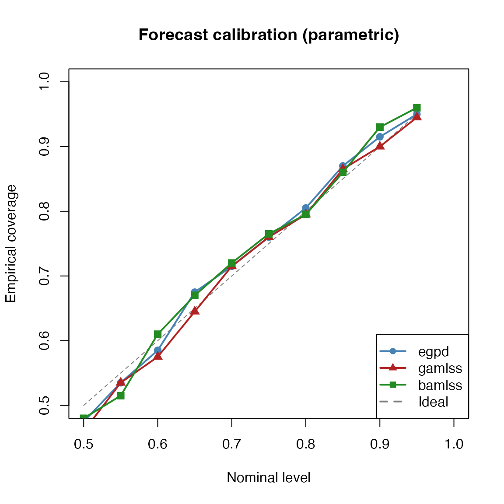

A well-calibrated model should produce prediction intervals whose
empirical coverage matches their nominal level. The
predictive_coverage() function computes simulation-based
prediction intervals for fitted EGPD models and reports their empirical
coverage. This vignette demonstrates its use for all three fitting
approaches — egpd(), gamlss(), and
bamlss() — and shows how to construct calibration plots
that compare nominal and empirical coverage across a range of
levels.
1. Simulate data
We simulate 1000 observations from a discrete EGPD Model 1 with known parameters. Using the same data for all three fits allows a fair comparison.
set.seed(42)
n <- 1000
sigma_true <- 3
xi_true <- 0.15
kappa_true <- 2
y <- rdiscegpd(n, sigma = sigma_true, xi = xi_true,
kappa = kappa_true, type = 1)
df <- data.frame(y = y)
cat("n =", n, "\n")
#> n = 1000
cat("Range:", range(y), "\n")
#> Range: 0 38
cat("Mean:", round(mean(y), 2), "\n")
#> Mean: 4.732. Fit models
egpd
fit_e <- egpd(list(lsigma = y ~ 1, lxi = ~ 1, lkappa = ~ 1),
data = df, family = "degpd", degpd.args = list(m = 1))
summary(fit_e)
#>
#> ** Parametric terms **
#>
#> logscale
#> Estimate Std. Error t value Pr(>|t|)
#> (Intercept) 1.14 0.1 11.58 <2e-16
#>
#> logshape
#> Estimate Std. Error t value Pr(>|t|)
#> (Intercept) -2.12 0.36 -5.87 2.23e-09
#>
#> logkappa
#> Estimate Std. Error t value Pr(>|t|)
#> (Intercept) 0.63 0.09 7.33 1.17e-13
#>
#> ** Smooth terms **gamlss
fit_g <- gamlss(y ~ 1, sigma.formula = ~ 1, nu.formula = ~ 1,
data = df, family = DEGPD1(),
control = gamlss.control(n.cyc = 200, trace = FALSE))bamlss
fit_b <- bamlss(list(y ~ 1, ~ 1, ~ 1),
data = df, family = degpd_bamlss(m = 1),
verbose = FALSE)Parameter estimates
pars_e <- predict(fit_e, type = "response")[1, ]
mu_g <- exp(coef(fit_g, what = "mu"))
sigma_g <- exp(coef(fit_g, what = "sigma"))
nu_g <- exp(coef(fit_g, what = "nu"))
sigma_b <- exp(fit_b$parameters$sigma$p)
xi_b <- exp(fit_b$parameters$xi$p)
kappa_b <- exp(fit_b$parameters$kappa$p)
data.frame(
parameter = c("sigma", "xi", "kappa"),
true = c(sigma_true, xi_true, kappa_true),
egpd = round(as.numeric(unlist(pars_e)), 4),
gamlss = round(c(mu_g, sigma_g, nu_g), 4),
bamlss = round(c(sigma_b, xi_b, kappa_b), 4),
row.names = NULL
)
#> parameter true egpd gamlss bamlss
#> 1 sigma 3.00 3.1202 3.1009 3.1162
#> 2 xi 0.15 0.1198 0.1221 0.1203
#> 3 kappa 2.00 1.8744 1.8838 1.87633. Predictive coverage at the 95% level
We evaluate both plug-in prediction (parameters fixed at their point estimates) and parametric prediction (parameters perturbed on the link scale to account for estimation uncertainty).
set.seed(1)
nsim <- 3000
# egpd
cov_e_pi <- predictive_coverage(fit_e, y, nsim = nsim, method = "plug-in")
cov_e_par <- predictive_coverage(fit_e, y, nsim = nsim, method = "parametric")
# gamlss
cov_g_pi <- predictive_coverage(fit_g, y, nsim = nsim, method = "plug-in")
cov_g_par <- predictive_coverage(fit_g, y, nsim = nsim, method = "parametric")
# bamlss
cov_b_pi <- predictive_coverage(fit_b, y, nsim = nsim, method = "plug-in")
cov_b_par <- predictive_coverage(fit_b, y, nsim = nsim, method = "parametric")
data.frame(
approach = rep(c("egpd", "gamlss", "bamlss"), each = 2),
method = rep(c("plug-in", "parametric"), 3),
coverage = round(c(cov_e_pi$coverage, cov_e_par$coverage,
cov_g_pi$coverage, cov_g_par$coverage,
cov_b_pi$coverage, cov_b_par$coverage), 4),
nominal = 0.95,
row.names = NULL
)
#> approach method coverage nominal
#> 1 egpd plug-in 0.952 0.95
#> 2 egpd parametric 0.944 0.95
#> 3 gamlss plug-in 0.961 0.95
#> 4 gamlss parametric 0.954 0.95
#> 5 bamlss plug-in 0.949 0.95
#> 6 bamlss parametric 0.953 0.95All approaches achieve empirical coverage close to the nominal 95% level. The parametric method tends to produce slightly wider intervals because it accounts for parameter uncertainty.
4. Calibration across multiple levels
A calibration plot checks whether the empirical coverage tracks the nominal level across a range of values. A perfectly calibrated model falls on the diagonal.
set.seed(2)
levels <- seq(0.50, 0.99, by = 0.05)
nsim_cal <- 3000
# Helper to compute coverage at multiple levels
multi_coverage <- function(fit, y, levels, nsim, method) {
vapply(levels, function(lv) {
predictive_coverage(fit, y, level = lv, nsim = nsim,
method = method)$coverage
}, numeric(1))
}
# Plug-in coverage
cov_e_levels <- multi_coverage(fit_e, y, levels, nsim_cal, "plug-in")
cov_g_levels <- multi_coverage(fit_g, y, levels, nsim_cal, "plug-in")
cov_b_levels <- multi_coverage(fit_b, y, levels, nsim_cal, "plug-in")
# Parametric coverage
cov_e_par_levels <- multi_coverage(fit_e, y, levels, nsim_cal, "parametric")
cov_g_par_levels <- multi_coverage(fit_g, y, levels, nsim_cal, "parametric")
cov_b_par_levels <- multi_coverage(fit_b, y, levels, nsim_cal, "parametric")Calibration plot: plug-in prediction
plot(levels, levels, type = "l", lwd = 1, col = "grey50", lty = 2,
xlab = "Nominal level", ylab = "Empirical coverage",
main = "Calibration plot (plug-in)", xlim = c(0.5, 1), ylim = c(0.5, 1))
points(levels, cov_e_levels, pch = 16, col = "steelblue", cex = 1.2)
lines(levels, cov_e_levels, col = "steelblue", lwd = 2)
points(levels, cov_g_levels, pch = 17, col = "firebrick", cex = 1.2)
lines(levels, cov_g_levels, col = "firebrick", lwd = 2)
points(levels, cov_b_levels, pch = 15, col = "forestgreen", cex = 1.2)
lines(levels, cov_b_levels, col = "forestgreen", lwd = 2)
legend("bottomright",
legend = c("egpd", "gamlss", "bamlss", "Ideal"),
col = c("steelblue", "firebrick", "forestgreen", "grey50"),
pch = c(16, 17, 15, NA), lty = c(1, 1, 1, 2), lwd = 2)
Calibration plot: parametric prediction
plot(levels, levels, type = "l", lwd = 1, col = "grey50", lty = 2,
xlab = "Nominal level", ylab = "Empirical coverage",
main = "Calibration plot (parametric)", xlim = c(0.5, 1), ylim = c(0.5, 1))
points(levels, cov_e_par_levels, pch = 16, col = "steelblue", cex = 1.2)
lines(levels, cov_e_par_levels, col = "steelblue", lwd = 2)
points(levels, cov_g_par_levels, pch = 17, col = "firebrick", cex = 1.2)
lines(levels, cov_g_par_levels, col = "firebrick", lwd = 2)
points(levels, cov_b_par_levels, pch = 15, col = "forestgreen", cex = 1.2)
lines(levels, cov_b_par_levels, col = "forestgreen", lwd = 2)
legend("bottomright",
legend = c("egpd", "gamlss", "bamlss", "Ideal"),
col = c("steelblue", "firebrick", "forestgreen", "grey50"),
pch = c(16, 17, 15, NA), lty = c(1, 1, 1, 2), lwd = 2)
Both plots show that all three fitting approaches are well-calibrated, with empirical coverage closely tracking the nominal level. The small deviations are expected for discrete data — the integer-valued nature of the response means that exact coverage at every level is not achievable.
5. Calibration with a covariate-dependent model
To demonstrate coverage assessment with covariates, we simulate
discrete EGPD data where the scale parameter varies smoothly with a
covariate x.
set.seed(7)
n <- 1000
x <- runif(n, 0, 1)
sigma_x <- exp(1 + 2 * x)
xi_true <- 0.3
kappa_true <- 1.5
y_s <- rdiscegpd(n, sigma = sigma_x, xi = xi_true,
kappa = kappa_true, type = 1)
df_s <- data.frame(y = y_s, x = x)Fit with smooth terms
fit_es <- egpd(list(lsigma = y ~ s(x, k = 10), lxi = ~ 1, lkappa = ~ 1),
data = df_s, family = "degpd", degpd.args = list(m = 1))
fit_gs <- gamlss(y ~ pb(x), sigma.formula = ~ 1, nu.formula = ~ 1,
data = df_s, family = DEGPD1(),
control = gamlss.control(n.cyc = 200, trace = FALSE))
fit_bs <- bamlss(list(y ~ s(x, k = 10), ~ 1, ~ 1),
data = df_s, family = degpd_bamlss(m = 1),
verbose = FALSE)Calibration across levels
set.seed(3)
levels_s <- seq(0.50, 0.99, by = 0.05)
nsim_s <- 3000
cov_es <- multi_coverage(fit_es, y_s, levels_s, nsim_s, "plug-in")
cov_gs <- multi_coverage(fit_gs, y_s, levels_s, nsim_s, "plug-in")
cov_bs <- multi_coverage(fit_bs, y_s, levels_s, nsim_s, "plug-in")
plot(levels_s, levels_s, type = "l", lwd = 1, col = "grey50", lty = 2,
xlab = "Nominal level", ylab = "Empirical coverage",
main = "Calibration plot (smooth covariate model)",
xlim = c(0.5, 1), ylim = c(0.5, 1))
points(levels_s, cov_es, pch = 16, col = "steelblue", cex = 1.2)
lines(levels_s, cov_es, col = "steelblue", lwd = 2)
points(levels_s, cov_gs, pch = 17, col = "firebrick", cex = 1.2)
lines(levels_s, cov_gs, col = "firebrick", lwd = 2)
points(levels_s, cov_bs, pch = 15, col = "forestgreen", cex = 1.2)
lines(levels_s, cov_bs, col = "forestgreen", lwd = 2)
legend("bottomright",
legend = c("egpd", "gamlss", "bamlss", "Ideal"),
col = c("steelblue", "firebrick", "forestgreen", "grey50"),
pch = c(16, 17, 15, NA), lty = c(1, 1, 1, 2), lwd = 2)
Even with covariate-dependent parameters, all three fitting approaches produce well-calibrated prediction intervals.
6. Out-of-sample forecast evaluation
The previous sections assessed in-sample coverage: the prediction intervals were evaluated on the same data used to fit the model. A more stringent test is out-of-sample (forecast) coverage, where we hold out observations that the model has never seen. This is the relevant metric for real forecasting applications.
We simulate a larger covariate-dependent dataset, hold out the last
200 observations as a test set, fit on the training set, and evaluate
coverage on the held-out data via newdata.
Simulate train/test split
set.seed(10)
n_total <- 1200
n_test <- 200
n_train <- n_total - n_test
x_all <- seq(0, 1, length.out = n_total)
sigma_all <- exp(1 + 2 * x_all)
xi_true_f <- 0.3
kappa_true_f <- 1.5
y_all <- rdiscegpd(n_total, sigma = sigma_all, xi = xi_true_f,
kappa = kappa_true_f, type = 1)
df_all <- data.frame(y = y_all, x = x_all)
df_train <- df_all[1:n_train, ]
df_test <- df_all[(n_train + 1):n_total, ]
y_test <- df_test$y
cat("Training set: n =", n_train, "\n")
#> Training set: n = 1000
cat("Test set: n =", n_test, "\n")
#> Test set: n = 200
cat("Test x range:", round(range(df_test$x), 3), "\n")
#> Test x range: 0.834 1Fit models on training data only
fit_e_tr <- egpd(list(lsigma = y ~ s(x, k = 10), lxi = ~ 1, lkappa = ~ 1),
data = df_train, family = "degpd", degpd.args = list(m = 1))
fit_g_tr <- gamlss(y ~ pb(x), sigma.formula = ~ 1, nu.formula = ~ 1,
data = df_train, family = DEGPD1(),
control = gamlss.control(n.cyc = 200, trace = FALSE))
fit_b_tr <- bamlss(list(y ~ s(x, k = 10), ~ 1, ~ 1),
data = df_train, family = degpd_bamlss(m = 1),
verbose = FALSE)Out-of-sample coverage at 95%
We pass newdata = df_test so that predictions are made
at the test-set covariate values, and compare against the held-out
responses y_test.
set.seed(5)
nsim_f <- 3000
fcov_e_pi <- predictive_coverage(fit_e_tr, y_test, newdata = df_test,
nsim = nsim_f, method = "plug-in")
fcov_e_par <- predictive_coverage(fit_e_tr, y_test, newdata = df_test,
nsim = nsim_f, method = "parametric")
fcov_g_pi <- predictive_coverage(fit_g_tr, y_test, newdata = df_test,
nsim = nsim_f, method = "plug-in")
fcov_g_par <- predictive_coverage(fit_g_tr, y_test, newdata = df_test,
nsim = nsim_f, method = "parametric")
fcov_b_pi <- predictive_coverage(fit_b_tr, y_test, newdata = df_test,
nsim = nsim_f, method = "plug-in")
fcov_b_par <- predictive_coverage(fit_b_tr, y_test, newdata = df_test,
nsim = nsim_f, method = "parametric")
data.frame(
approach = rep(c("egpd", "gamlss", "bamlss"), each = 2),
method = rep(c("plug-in", "parametric"), 3),
coverage = round(c(fcov_e_pi$coverage, fcov_e_par$coverage,
fcov_g_pi$coverage, fcov_g_par$coverage,
fcov_b_pi$coverage, fcov_b_par$coverage), 4),
nominal = 0.95,
row.names = NULL
)
#> approach method coverage nominal
#> 1 egpd plug-in 0.960 0.95
#> 2 egpd parametric 0.960 0.95
#> 3 gamlss plug-in 0.945 0.95
#> 4 gamlss parametric 0.950 0.95
#> 5 bamlss plug-in 0.955 0.95
#> 6 bamlss parametric 0.960 0.95Forecast calibration across levels
set.seed(6)
levels_f <- seq(0.50, 0.99, by = 0.05)
nsim_fc <- 3000
multi_coverage_oos <- function(fit, y, newdata, levels, nsim, method) {
vapply(levels, function(lv) {
predictive_coverage(fit, y, newdata = newdata, level = lv,
nsim = nsim, method = method)$coverage
}, numeric(1))
}
# Plug-in
fcov_e_lev <- multi_coverage_oos(fit_e_tr, y_test, df_test, levels_f, nsim_fc, "plug-in")
fcov_g_lev <- multi_coverage_oos(fit_g_tr, y_test, df_test, levels_f, nsim_fc, "plug-in")
fcov_b_lev <- multi_coverage_oos(fit_b_tr, y_test, df_test, levels_f, nsim_fc, "plug-in")
# Parametric
fcov_e_par_lev <- multi_coverage_oos(fit_e_tr, y_test, df_test, levels_f, nsim_fc, "parametric")
fcov_g_par_lev <- multi_coverage_oos(fit_g_tr, y_test, df_test, levels_f, nsim_fc, "parametric")
fcov_b_par_lev <- multi_coverage_oos(fit_b_tr, y_test, df_test, levels_f, nsim_fc, "parametric")Forecast calibration plot: plug-in
plot(levels_f, levels_f, type = "l", lwd = 1, col = "grey50", lty = 2,
xlab = "Nominal level", ylab = "Empirical coverage",
main = "Forecast calibration (plug-in)",
xlim = c(0.5, 1), ylim = c(0.5, 1))
points(levels_f, fcov_e_lev, pch = 16, col = "steelblue", cex = 1.2)
lines(levels_f, fcov_e_lev, col = "steelblue", lwd = 2)
points(levels_f, fcov_g_lev, pch = 17, col = "firebrick", cex = 1.2)
lines(levels_f, fcov_g_lev, col = "firebrick", lwd = 2)
points(levels_f, fcov_b_lev, pch = 15, col = "forestgreen", cex = 1.2)
lines(levels_f, fcov_b_lev, col = "forestgreen", lwd = 2)
legend("bottomright",
legend = c("egpd", "gamlss", "bamlss", "Ideal"),
col = c("steelblue", "firebrick", "forestgreen", "grey50"),
pch = c(16, 17, 15, NA), lty = c(1, 1, 1, 2), lwd = 2)
Forecast calibration plot: parametric
plot(levels_f, levels_f, type = "l", lwd = 1, col = "grey50", lty = 2,
xlab = "Nominal level", ylab = "Empirical coverage",
main = "Forecast calibration (parametric)",
xlim = c(0.5, 1), ylim = c(0.5, 1))
points(levels_f, fcov_e_par_lev, pch = 16, col = "steelblue", cex = 1.2)
lines(levels_f, fcov_e_par_lev, col = "steelblue", lwd = 2)
points(levels_f, fcov_g_par_lev, pch = 17, col = "firebrick", cex = 1.2)
lines(levels_f, fcov_g_par_lev, col = "firebrick", lwd = 2)
points(levels_f, fcov_b_par_lev, pch = 15, col = "forestgreen", cex = 1.2)
lines(levels_f, fcov_b_par_lev, col = "forestgreen", lwd = 2)
legend("bottomright",
legend = c("egpd", "gamlss", "bamlss", "Ideal"),
col = c("steelblue", "firebrick", "forestgreen", "grey50"),
pch = c(16, 17, 15, NA), lty = c(1, 1, 1, 2), lwd = 2)
Forecast prediction intervals vs observations
A useful visual check is to plot the prediction intervals alongside the held-out observations. Points falling outside the interval are highlighted.
# Use egpd parametric intervals for illustration
cov_plot <- fcov_e_par
outside <- !cov_plot$covered
x_test <- df_test$x
plot(x_test, y_test, pch = 20, col = ifelse(outside, "red", "grey50"),
cex = ifelse(outside, 1.2, 0.8),
xlab = "x", ylab = "y",
main = sprintf("egpd forecast: 95%% prediction interval (coverage = %.1f%%)",
100 * cov_plot$coverage))
# Shade the prediction band
ord <- order(x_test)
polygon(c(x_test[ord], rev(x_test[ord])),
c(cov_plot$L[ord], rev(cov_plot$U[ord])),
col = adjustcolor("steelblue", alpha.f = 0.2), border = NA)
lines(x_test[ord], cov_plot$L[ord], col = "steelblue", lwd = 1.5)
lines(x_test[ord], cov_plot$U[ord], col = "steelblue", lwd = 1.5)
# Re-draw points on top
points(x_test, y_test, pch = 20, col = ifelse(outside, "red", "grey50"),
cex = ifelse(outside, 1.2, 0.8))
legend("topleft",
legend = c("Covered", "Outside", "95% PI"),
col = c("grey50", "red", "steelblue"),
pch = c(20, 20, NA), lty = c(NA, NA, 1), lwd = c(NA, NA, 1.5),
pt.cex = c(0.8, 1.2, NA))
The prediction band widens with x, reflecting the
increasing scale parameter. Held-out observations that fall outside the
interval (red) are roughly 5% of the total, matching the nominal
level.
In-sample vs out-of-sample comparison
set.seed(7)
# In-sample coverage on training data
cov_in_e <- predictive_coverage(fit_e_tr, df_train$y,
nsim = nsim_f, method = "parametric")
cov_in_g <- predictive_coverage(fit_g_tr, df_train$y,
nsim = nsim_f, method = "parametric")
cov_in_b <- predictive_coverage(fit_b_tr, df_train$y,
nsim = nsim_f, method = "parametric")
data.frame(
approach = rep(c("egpd", "gamlss", "bamlss"), each = 2),
evaluation = rep(c("in-sample", "out-of-sample"), 3),
coverage = round(c(cov_in_e$coverage, fcov_e_par$coverage,
cov_in_g$coverage, fcov_g_par$coverage,
cov_in_b$coverage, fcov_b_par$coverage), 4),
nominal = 0.95,
row.names = NULL
)
#> approach evaluation coverage nominal
#> 1 egpd in-sample 0.935 0.95
#> 2 egpd out-of-sample 0.960 0.95
#> 3 gamlss in-sample 0.945 0.95
#> 4 gamlss out-of-sample 0.950 0.95
#> 5 bamlss in-sample 0.944 0.95
#> 6 bamlss out-of-sample 0.960 0.95Both in-sample and out-of-sample coverage are close to the nominal 95% level, confirming that the models generalise well to unseen data within the covariate range.
7. Shortest vs equal-tailed intervals
For discrete data, equal-tailed intervals may not be optimal because
the probability mass is concentrated on integers. The
use_shortest = TRUE option computes the shortest (highest
density region) interval instead.
set.seed(4)
cov_eq <- predictive_coverage(fit_e, y, level = 0.95, nsim = 3000,
method = "plug-in", use_shortest = FALSE)
cov_hdr <- predictive_coverage(fit_e, y, level = 0.95, nsim = 3000,
method = "plug-in", use_shortest = TRUE)
data.frame(
interval_type = c("Equal-tailed", "Shortest (HDR)"),
coverage = round(c(cov_eq$coverage, cov_hdr$coverage), 4),
mean_width = round(c(mean(cov_eq$U - cov_eq$L),
mean(cov_hdr$U - cov_hdr$L)), 2),
row.names = NULL
)
#> interval_type coverage mean_width
#> 1 Equal-tailed 0.948 16.61
#> 2 Shortest (HDR) 0.955 13.85The shortest interval achieves similar coverage with narrower (or equal) interval width, making it the more efficient choice for discrete data.
Summary
The predictive_coverage() function provides a
straightforward way to assess the calibration of EGPD-family models
fitted via any of the three supported frameworks. Key takeaways:
- All three approaches (
egpd,gamlss,bamlss) produce well-calibrated prediction intervals on correctly specified data. - The parametric method accounts for estimation uncertainty and tends to yield slightly wider intervals than the plug-in method.
- Out-of-sample forecast coverage (fitting on a training set and evaluating on held-out data) closely matches in-sample coverage, confirming that the models generalise well.
- Prediction interval plots show how the interval widens in regions of higher variability, and highlight outlying observations.
- For discrete data, the shortest (HDR) interval is more efficient than equal-tailed intervals.
- Calibration plots are a useful diagnostic: deviations from the diagonal signal model misspecification or inadequate uncertainty quantification.